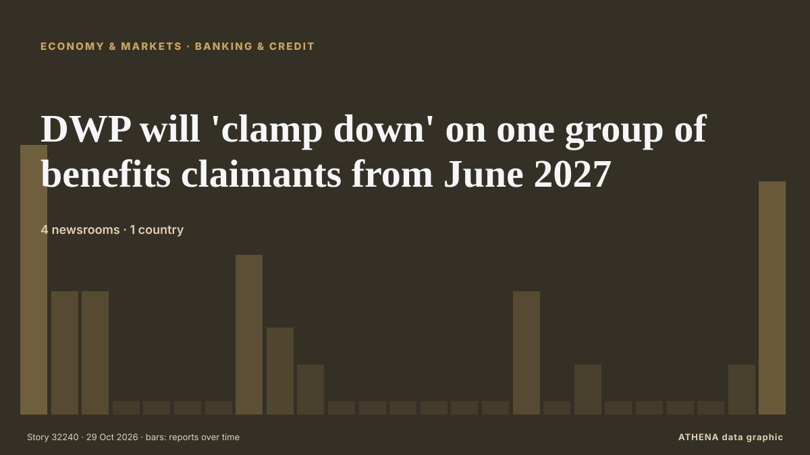

DWP will 'clamp down' on one group of benefits claimants from June 2027

DWP has confirmed the crackdown on thousands of claimants living abroad. de Birmingham Mail
Informado de forma independiente por 4 medios de 1 país desde el 26 oct; el primero fue Birmingham Mail; la cobertura va perdiendo fuerza. ATHENA califica el riesgo como bajo (0.9/10), sobre todo por la gravedad del daño descrito y la calidad de las pruebas. La confianza es del 60 % (moderada): lo corroboran 4 medios independientes, con una fiabilidad media de las fuentes del 67 %.
Por qué importa: Los hechos económicos y de mercado se trasladan a los precios, el empleo, el coste del crédito y la inversión.
Qué ha cambiado: 8 informaciones nuevas de 3 redacciones en las 24 horas hasta el 29 oct.
Los titulares se muestran en inglés, tal como se publicaron.
De un vistazo
Seleccionado, puntuado y redactado por la metodología publicada de ATHENA. Ningún editor interviene en eventos concretos. Cómo se elabora ›
| 26 Oct 07:47 UTC | 7 |
|---|---|
| 26 Oct 10:47 UTC | 3 |
| 26 Oct 13:47 UTC | 3 |
| 26 Oct 16:47 UTC | 0 |
| 26 Oct 19:47 UTC | 0 |
| 26 Oct 22:47 UTC | 0 |
| 27 Oct 01:47 UTC | 0 |
| 27 Oct 04:47 UTC | 4 |
| 27 Oct 07:47 UTC | 2 |
| 27 Oct 10:47 UTC | 1 |
| 27 Oct 13:47 UTC | 0 |
| 27 Oct 16:47 UTC | 0 |
| 27 Oct 19:47 UTC | 0 |
| 27 Oct 22:47 UTC | 0 |
| 28 Oct 01:47 UTC | 0 |
| 28 Oct 04:47 UTC | 0 |
| 28 Oct 07:47 UTC | 3 |
| 28 Oct 10:47 UTC | 0 |
| 28 Oct 13:47 UTC | 1 |
| 28 Oct 16:47 UTC | 0 |
| 28 Oct 19:47 UTC | 0 |
| 28 Oct 22:47 UTC | 0 |
| 29 Oct 01:47 UTC | 0 |
| 29 Oct 04:47 UTC | 1 |
| 29 Oct 07:47 UTC | 6 |
| 26 Oct 10:17 UTC | 2.6 |
|---|---|
| 27 Oct 10:14 UTC | 1.4 |
| 29 Oct 10:25 UTC | 0.9 |
Por qué estas cifras
Importancia
Riesgo
Confianza
La cobertura: quién informó y cuándo
titular tal como se publicó · abre el original- Birmingham Mail · Reino Unido · United KingdomAndy Burnham government told to 'reconsider' DWP plan for claimants under 25
- Birmingham Mail · Reino Unido · United Kingdom505,000 people on 4 DWP benefits being handed £150 boost - full list
- Birmingham Mail · Reino Unido · United KingdomNew PIP, DLA, Attendance Allowance, ESA rates emerge ahead of DWP announcement
- Birmingham Mail · Reino Unido · United KingdomDWP told to 'confront' PIP payments for 170,312 claimants in brutal crackdown
- Birmingham Mail · Reino Unido · United KingdomDWP reviewing state pension rule after claimants handed bumper £728 extra
- Birmingham Mail · Reino Unido · United KingdomDWP to announce crackdown on Wednesday with Attendance Allowance claimants affected
- Birmingham Mail · Reino Unido · United KingdomDWP confirms 4 changes to Work Capability Assessments with claimants affected
- Manchester Evening News · Reino Unido · United KingdomDWP confirms first use of bank checking powers under major new law
- Birmingham Mail · Reino Unido · United KingdomDWP 'testing' change to PIP in shake-up to decisions on people's benefits
- Birmingham Mail · Reino Unido · United Kingdom565,000 DWP Universal Credit, ESA, Pension Credit claimants getting £150 perk
- Birmingham Mail · Reino Unido · United KingdomDWP warning for Universal Credit claimants who face payments being 'recovered'
- Birmingham Mail · Reino Unido · United KingdomDWP begins crackdown on 3 benefits with two details of claimants being checked
- Birmingham Mail · Reino Unido · United KingdomDWP to begin stripping 4 benefits from early 2027 with thousands affected
- Birmingham Mail · Reino Unido · United KingdomDWP will scrap dreaded rule for 1.4 million benefits claimants tomorrow
- Birmingham Mail · Reino Unido · United KingdomDWP ordering thousands of benefits claimants to repay £740 each
- Birmingham Mail · Reino Unido · United KingdomDWP confirms 'first' in bid to get thousands of claimants off benefits
- Chronicle Live (Newcastle) · Reino Unido · United KingdomDWP rule-change for 1.4million benefit claimants as 'cliff edge' to be scrapped
- Birmingham Mail · Reino Unido · United KingdomDWP punishment for benefits claimants to be watered down from Wednesday
- Birmingham Mail · Reino Unido · United KingdomBanks start flagging benefits claimants to DWP after checking two details
- Birmingham Mail · Reino Unido · United KingdomNew DWP earnings rule for benefits claimants confirmed ahead of repayments
- Birmingham Mail · Reino Unido · United KingdomDWP confirms changes after assessors see claimants 'limp into office and skip out'
- Birmingham Mail · Reino Unido · United KingdomDWP confirms fairer treatment for benefits claimants - but not until 2030
- Birmingham Mail · Reino Unido · United KingdomDWP confirms change to Universal Credit, PIP, ESA unless claimants opt out
- Manchester Evening News · Reino Unido · United KingdomMajor update in Budget 2026 on when PIP changes will be announced by the DWP
- Bristol Post · Reino Unido · United Kingdom'Changes are being made now' to DWP benefits including Universal Credit
- Birmingham Mail · Reino Unido · United KingdomDWP hiring 2,000 staff ahead of Universal Credit crackdown from April 2027
- Birmingham Mail · Reino Unido · United KingdomDWP 'restricting access' to Universal Credit for one group of claimants in crackdown
- Birmingham Mail · Reino Unido · United KingdomDWP will 'clamp down' on one group of benefits claimants from June 2027
- Birmingham Mail · Reino Unido · United KingdomDWP 'increasing checks' on Pension Credit claimants with 1.3 million at risk
- Birmingham Mail · Reino Unido · United KingdomDWP confirms Universal Credit earnings rule for claimants until at least 2028
- Birmingham Mail · Reino Unido · United KingdomDWP issues bombshell Timms Review update for 4 million claimants